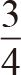
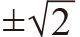
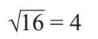
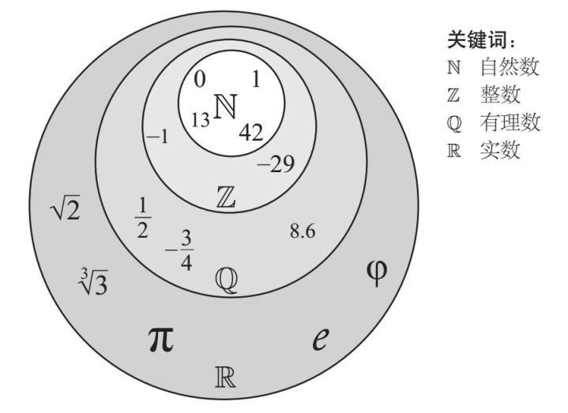

有64%的人都曾接触过“超级计算机”。
据预测，2017年全球移动电话拥有者将达48亿人，而世界总人口约为75亿。日裔美籍物理学家加来道雄（Michio Kaku，生于1947年）说过：“1969年，美国国家航空航天局（NASA）将两名宇航员送入太空时，其使用的仪器的计算能力还不如如今的手机。”
轻轻滑动一下手机，你就可以随心所欲地计算，所以为什么还要费力地学习自己计算呢？
因为通过计算，你可以了解数字是怎样运算的。研究数字运算的学科习惯上被称为算术，但如今人们用这个词来表示计算。而那些专门研究数字特性的人则被称为数字理论家。他们致力于探索宇宙的数学根基及数字的无穷本质。
真是高深莫测。
下面让我们先去动物园逛一逛。
人类与数字的接触是从数数开始的，从1一直向上数（都是整数），这些数字被称为自然数。把这些数字放进数学动物园里，并把每一个数字都圈到围栏中，我们就得到了：
1, 2, 3, 4, 5, 6…
古希腊人认为0不是自然数，因为有0个苹果根本说不通。但是，我们仍把0归为自然数，是因为从负整数过渡到自然数，0起到了桥梁的作用。这样，我们的动物园队伍又壮大了不少：
…–6, –5, –4, –3, –2, –1, 0, 1, 2, 3, 4, 5, 6…
如今，这个数学动物园包含了所有负整数，当它们与自然数结合时，就构成了“整数”。每一个正整数搭配一个负整数，动物园里的围栏比原来多了一倍，而0的待遇不错，它单独待在一个小屋中。可是，我的数学动物园不需要扩大地盘，因为它本来就无限大。这只是一个用来解释我在前面所说的“高深莫测”的例子。
还有一些数字不是整数。希腊人钟情于“成堆”的苹果，但我们知道“一个”苹果也可以分给很多个人。每个人都可以得到苹果的一部分，在我的动物园里就有“分数”的例子。
如果我想列出0和1之间的所有分数，那么可以从二分法开始，接下来会有三分法、四分法等，这样似乎说得通。但这种数学方法应保证把所有分数一网打尽，不能有漏网之鱼。接下来要做的就是让所有自然数都做一遍分数的分母（分式小横线下面的数字）；对于每一个分母，都可以从自然数中指定一个数当作它的分子（分式小横线上面的数字）——从1开始，直到与分母相同。
分数表示的是整数之间的数字。书写时由一个小横线作为分界线，线上的数字是分子，线下的数字是分母。比如，二分之一可以写成下面的形式：
上式中，1是分子，2是分母。它表示把数字1分为两份。这个分数的意思是，如果你把一样东西分享给两个人，你将得到二分之一。而

表示四个人分享三样东西，每个人可以得到四分之三。
我曾经试图把0和1之间的所有分数都列出来，然后用它们来推导出相邻两个自然数之间的所有分数。如果我把0和1之间的所有分数加上1，就会得到1和2之间的所有分数，把它们再加上1，就可以得到3和4之间的所有分数。所有相邻自然数之间的分数都可以这样得到，同样，我也可以得到任意相邻负整数之间的分数。
我的数学动物园里本就有无穷个整数，眼下我还需要给它们之间的分数建围栏，而分数也是无穷的。也就是说，我需要无穷倍的无穷空间。听起来像是大工程，但幸运的是我的围栏也足够多。
由于分数也可以写成比值的形式，所以它们也被称为有理数。现在，我已经拥有了全部有理数，其中包含整数（整数可以写成分母为1的分数），整数里又包含自然数。数学动物园里的所有动物都到齐了。
请稍等。2 500年前，一些印度数学家说，有些数字是无法写成分数的。当他们说“有些”时，实际上是指无穷多个。他们发现，找不到平方（乘以自身）后得到2的数，所以2的平方根不是有理数。这个数包含无穷多个数字，写起来很麻烦，所以在这里我们使用平方根的符号，将其写成

。此外，还有一些重要的数字，它们不是有理数，而是用符号来表示的，如果硬要把它们写成数字，有点儿不妥，例如π 、e 和φ 。这些数我们将在后面讨论，它们叫作无理数。当然，我也要把它们放到动物园里去。猜猜连续的有理数之间有多少个无理数？没错，无穷多个！然而，我仍然可以让它们挤进我那个无穷大的动物园里，而无须再建造多余的围栏，但也许康托尔（Cantor）有话要说。
当一个数与自身相乘时，我们就把这个过程叫平方。我们用一个叫作幂或指数的小“2”来表示：
3×3=32
3的平方是9，也就是说3是9的平方根。求平方根与平方互为逆运算。4是16的平方根，因为4的平方是16：

像数字9和16被称为完全平方数，因为它们的平方根是整数。任何数字，包括分数和小数，都可以计算它的平方。任何正数都有平方根。
有关这方面的更多信息，请参阅第9章内容。
把无理数和有理数加在一起，就是数学家所说的实数。如果你熟悉了之前的数字划分法，你也许会怀疑是不是还有非实数的存在，确实有。然而，在这里，我不会再深入下去了，而是把动物园命名为“无穷实数动物园”。大多数动物园会按种类将动物分类，所以我把动物也按数字类型分组，但这些组有些是互相重叠的。数字分类大致按下图所示，我已经把一些有代表性的数字列了出来，它们能帮助读者更好地理解数的概念：
